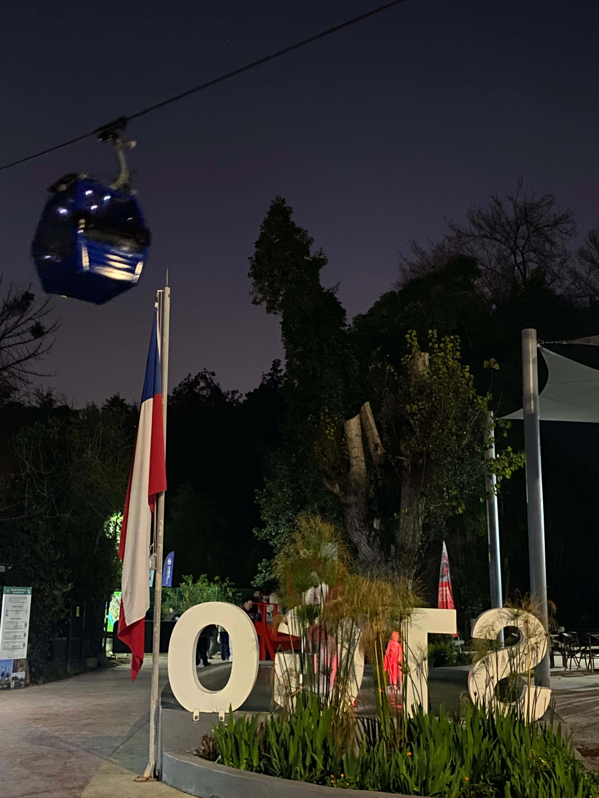
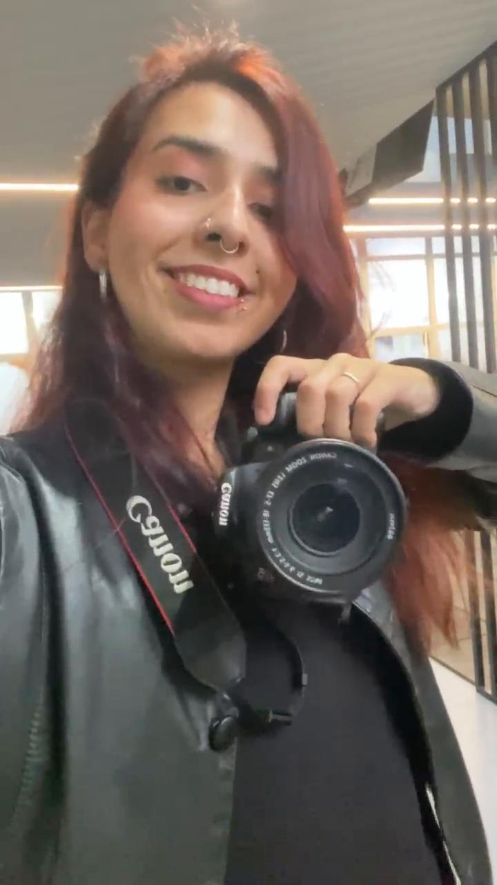
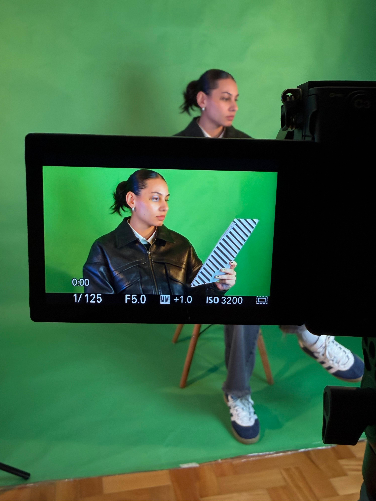
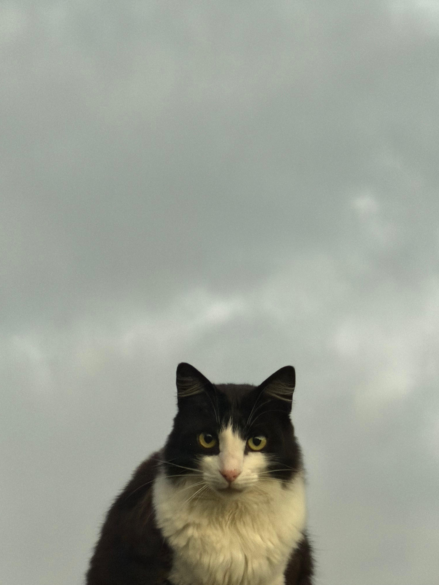

Tráfego pago que dá retorno
Gestão e otimização de campanhas no Meta Ads e Google Ads (Search, Display e YouTube), feitas pra chegar em quem já procura o que você vende: palavra-chave certa, audiência certa, lance certo.
Curitiba, PR · Brasil ✦ Marketing Digital
Eu faço sua marca ser encontrada no Google, nas redes e nas IAs.
SEO ✦ GEO ✦ Tráfego Pago ✦ Conteúdo que comunica o que a sua marca deve comunicar.


direto do meu rolo da câmera pra você ✦
quem tá por trás ✦
Há mais de 3 anos eu vivo entre dados e criatividade: gerencio campanhas de Meta Ads e Google Ads e otimizo sites para aparecerem no topo do Google.
Já passei por agências, produtora, pela área da saúde e pelo ecossistema do Grupo Boticário. Meu superpoder? Unir dado e criatividade: eu traduzo número em decisão e transformo conteúdo frio em história que faz as pessoas se enxergarem na sua marca.
Ah, e os pixels espalhados por esse site não estão aqui por acaso: sou gamer. Encaro cada projeto como uma fase nova, e eu jogo pra zerar.
por onde passei: Grupo Boticário · Action Films · Petit Comunicação · MedSul Saúde
o que eu faço no dia a dia ✦
campanha quebrada? dado errado? eu conserto! 🔨
Gestão e otimização de campanhas no Meta Ads e Google Ads (Search, Display e YouTube), feitas pra chegar em quem já procura o que você vende: palavra-chave certa, audiência certa, lance certo.
Diagnóstico e correção de conversões via Meta Pixel e Google Tag Manager. Se o dado tá errado, a decisão vem errada. Eu garanto a integridade do analytics de ponta a ponta.
Análise de CPC, CPL, CTR e ROAS no GA4 e Looker Studio, com recomendações orientadas a impacto financeiro, não a print de dashboard.
Otimização de conteúdo para LLMs (ChatGPT, Gemini, Perplexity), web semântica e Brand Citation. O futuro da busca já começou e eu já tô nele.
Planejamento de textos e páginas que respondem exatamente o que o seu cliente pesquisa no Google. Conteúdo que constrói autoridade de marca e sobe posição no orgânico.
Briefings estratégicos para peças gráficas e audiovisuais, roteiro para vídeo e direção de criativos alinhados ao funil de conversão.
Nada de post por postar: cada publicação sai com intenção e qualidade, guiada por tendência de busca e pelo formato que melhor performa no orgânico.
Coordenação de produções audiovisuais e materiais gráficos conforme branding, do briefing ao corte final, com Premiere, After Effects e CapCut.
direto do rolo de câmera ✦

100% autoral ✦ gravado por mim ✦ sem banco de imagem
a trajetória até aqui ✦
Especialista em Tráfego Pago e Marketing Digital
Campanhas Meta & Google Ads com foco em geração de leads, correção de rastreamento (Pixel/GTM), relatórios de performance no GA4 e testes de visibilidade de marca em LLMs.
Social Media
Estratégia de conteúdo com SEO on-page, planejamento de pautas e briefings estratégicos para materiais gráficos e audiovisuais.
Comunicação Corporativa
Endomarketing e comunicação interna na interface entre RH e Comunicação, com contato direto com o ecossistema de marcas do grupo.
Analista de Marketing e Social Media
Campanhas digitais, análise de KPIs, controle de orçamento (ROAS e CPA) e coordenação de produções audiovisuais.
✦ Pós em Marketing e Comunicação (Faculdade Líbano) · Bacharel em Negócios Internacionais (FAE) · Espanhol avançado · Inglês avançado
quem já trabalhou comigo ✦
“Substitua este texto pelo depoimento real. Me manda os relatos que eu plugo aqui.”
“Substitua este texto pelo depoimento real. Me manda os relatos que eu plugo aqui.”
“Substitua este texto pelo depoimento real. Me manda os relatos que eu plugo aqui.”
bora conversar? ✦
